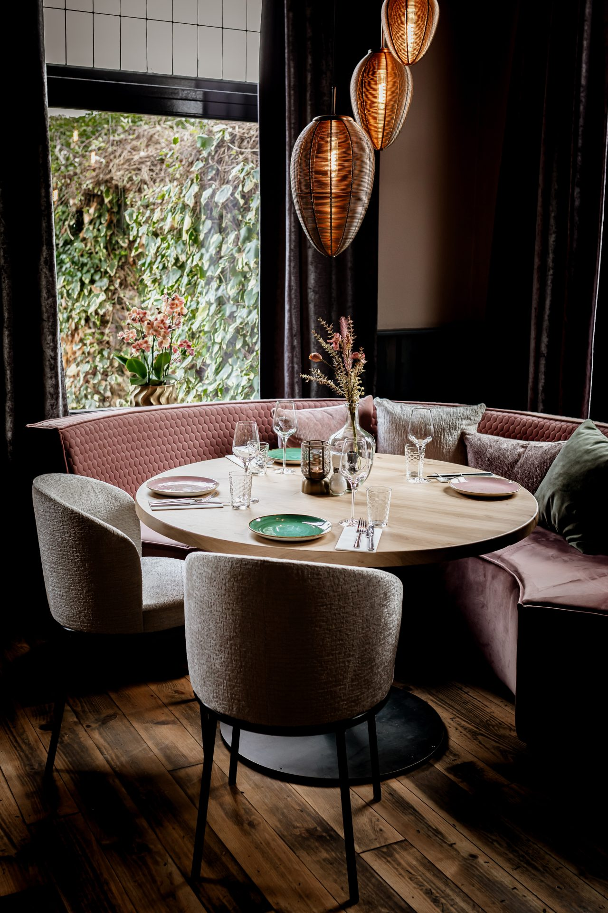
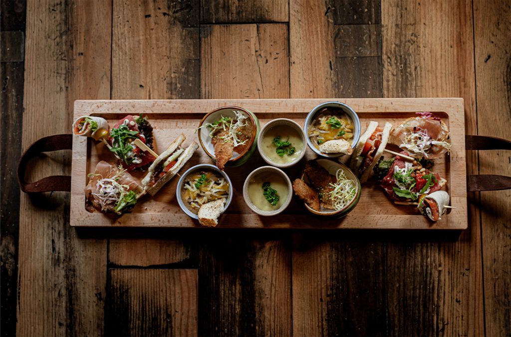
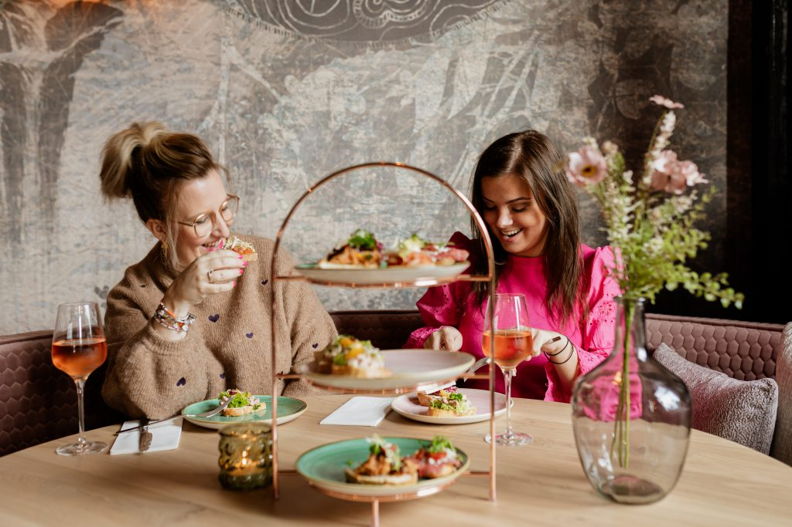
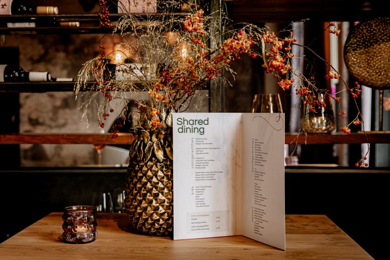

Dorpsplein 6, Kesteren
Kom genieten, kom delen.
Kleine bordjes uit de wereldkeuken, om samen van te proeven en heerlijk lang te tafelen. Shared dining, lunch, drinks & bites in het Ambtshuis aan het Dorpsplein.

Kun je niet kiezen? Dat is precies de bedoeling.
Een absolute klassieker als de carpaccio of de tomatensoep? Of toch een Italiaanse caprese of lasagne? Kiezen voor een Aziatisch uitstapje met onze Japanse yakitori balletjes is ook een aanrader!
Shared dining met je gezellige tafelgasten maakt de beleving compleet. Kleine bordjes met verschillende lekkernijen die jij en je tafelgenoten kunnen proeven. Niet alleen gezellig, maar ook culinair. Je hoeft niet te kiezen: je proeft lekker van alles wat.

Zo werkt shared dining
Je kiest een menu van 3, 4 of 5 gangen. Elke ronde bestel je 3 gerechtjes per persoon van de kaart. Bij de laatste ronde hoofdgerechten komen er friet en gebakken aardappels op tafel.
| Ma, do & zo | Vr & za | |
|---|---|---|
| 3 gangen | 38,50 | 41,50 |
| 4 gangen | 41,50 | 43,50 |
| 5 gangen | 44,50 | 46,50 |
- 3 gangen: één ronde voorgerechten, één ronde hoofdgerechten, één ronde desserts.
- 4 gangen: één ronde voorgerechten, één ronde naar keuze, één ronde hoofdgerechten, één ronde desserts.
- 5 gangen: twee rondes voorgerechten, twee rondes hoofdgerechten, één ronde desserts.
- Liever een extra warme gang in plaats van dessert? Dat kan, tegen een meerprijs.
- Kids: 4 t/m 9 jaar 15,50, 10 t/m 12 jaar 17,50.
- Met 14 personen of meer werken we met het tafeltje vol concept: meerdere, verschillende rondes met voor-, hoofd- en nagerechtjes.
De dinerkaart
Een reis door de wereldkeuken: van Nederland naar Italië, Spanje, Wenen voor de echte wiener schnitzel in klein formaat, en de Atlantische oceaan over. Echte klassiekers gaan prima samen met exotischer smaken. Dinerkaart vanaf 17:00 uur.
Koud
- Carpaccio
- Zalmbonbon
- Meloensalade
- Bruchetta pomodori
- Sashimi tonijn
- Pasta salade
- Caeser wrap
- Kipcocktail
- Caprese taartje
- Bruchetta osseworst
- Steak tartaar
Warm
- Tomatensoep
- Mosterdsoep
- Soep van de week
- Loempia
- Gegratineerde champignons
- Yakatori spiesjes
- Taco gehakt kaas
- Wrap pulled chicken
- Crispy shrimps
- Rundvlees pasteitje
Vlees
- Schnitzel roomsaus
- Smoked ribs
- Stoofvlees
- Saté
- Bereklauw
- Thaise gehaktballetjes
- Krokante kip
- Truffel burger
- Chorizo kroket
- Bavette
- Gevulde varkenshaas
- Speklapje andijviestamppot
Vis
- Gegratineerde gamba's
- Krokante scholfilet
- Gefrituurde mosselen
- Gebakken kabeljauw
Vega
- Lasagna
- Kaaskroket
- Cajun burger
- Mini borek
- Geitenkaaskroketje
- Gevulde tomaat
- Groente gyoza
- Kip kerrie
- Knoflookchampignons
- Appelcake caramel fudge
- Chocolade chip cookie
- Crème brûlée
- Aardbeien romanoff
- Dubaikoek pistache-ijs
- Dame blanche
- Orange split shake
- Sorbetijs
- Cornetto chocolademousse
- Rockyroad brownie
Voor de kids
- Mini-frikandellen
- Kipnuggets
- Loempia
- Ribs
- Kaassoufflé
- Burgertje
- Frietjes
Extra te bestellen
- Salade3,75
- Zoete aardappel friet4,75
Kids prijzen: 4 t/m 9 jaar 15,50, 10 t/m 12 jaar 17,50.
Lunch, tot 16:00 uur
Tip: start je shared dining beleving lekker met pincho's.
Soep
- Tomatensoep6,75
- Mosterdsoep7,25
- Soep van de week7,25
De soep wordt geserveerd met stokbrood en smeersels.
Broodjes
Keuze uit oerbrood wit of bruin.
- Broodje carpaccio van ossenhaassla, Parmezaan, pijnboompitten, truffelmayonaise, tomaatjes11,75
- Broodje gezondham, kaas, sla, tomaat, komkommer, ei8,75
Warm flatbread
- Flatbread briegesmolten brie, Parmaham, honing, walnoot (ook verkrijgbaar als vega-optie)11,75
- Flatbread carpaccio13,25
- Flatbread gerookte zalm14,75
- Tosti ham/kaas5,25
- Uitsmijter Dorpspleinham, kaas, spek10,75
- Omeletham, kaas, champignons10,25
- Biefstuk met friet of brood26,25
- Crispy chickenburgersla, tomaat, ui, chilimayo, frietjes14,50
Salades
- Salade carpaccio14,75
- Salade geitenkaas13,25
- Salade gegratineerde gamba's15,75
Salades worden geserveerd met stokbrood en smeersels.
Specials
- Club sandwich kipgerookte kip, tomaat, ei, spek, mosterdmayo, frietjes13,75
- Club sandwich fishgerookte zalm, tonijnsalade, ui, komkommer, remouladesaus, frietjes16,25
- 12 uurtjetomatensoepje, broodje carpaccio, broodje kroket, rundvleessalade13,75
- 12 uurtje vegamosterdsoepje, broodje kaaskroket, broodje eiersalade, bruchetta pomodori13,75
De clubs worden geserveerd met crispy fries.
Kies jouw favoriete pincho's uit! Wij adviseren drie pincho's per persoon. Prijs per pincho 4,00.
Koud
- Carpaccio
- Gerookte zalm
- Tonijnsalade
- Pomodori
- Seranoham
- Brie
- Eiersalade
Warm
- Gegratineerde champignons
- Geitenkaas
- Brie
- Getrancheerde biefstuk
- Kaaskroketje
- Chorizo kroketje
- Pulled pork
Onze specialiteit van het huis
- 't Ambtshuis lunchplankvoor twee personen, al onze favorieten op één plank17,50 p.p.
- 't Ambtshuis lunchplank kidstomatensoepje, tosti, mini frikandelletjes, kipnuggets, friet11,75

High tea
Een selectie verse thee, hartige hapjes en zoete lekkernijen, geserveerd op de etagère.
25,- per persoon
Groepen en arrangementen
Met een grote groep komen of een eetbeleving voor je gezelschap? We hebben arrangementen voor grote groepen. Vraag gerust naar de mogelijkheden.
Vraag naar de mogelijkhedenHet Ambtshuis heeft wat, al honderden jaren
In het karakteristieke Ambtshuis in Kesteren hechtten de ambtman en ambtsjonkers vroeger al meer belang aan spijs en drank dan aan het uitoefenen van de rechtspraak. De historische documenten waarin voor het eerst over het ambtshuis wordt gesproken, dateren uit 1456.
De rechtbank werd in 1797 opgeheven en het pand is altijd een ontmoetingsplek gebleven. Van herberg lang geleden tot shared dining belevenis in het heden. Kom delen, kom genieten en maak deel uit van de geschiedenis.
- 1456
- eerste vermelding in historische documenten
- 1797
- de rechtbank wordt opgeheven
- 2022
- Jan en Lavina Vermeer beginnen hun eigen restaurant

Jan & Lavina
Wij zijn Jan en Lavina Vermeer. Jan heeft meer dan 25 jaar ervaring in het restaurantwezen. In 2022 werd zijn droom werkelijkheid: de eerste stappen naar een eigen restaurant met zijn eigen touch. Samen met Lavina en hun twee dochters is hij vol enthousiasme in dit avontuur gestapt.
Wij zoeken versterking in de keuken
Zin om mee te koken? Stuur ons een berichtje.
Stuur een berichtjeReserveren
Bel ons of mail je reservering: met de datum, het tijdstip en het aantal personen.
Openingstijden
| Maandag | 11:30 – 22:00 |
|---|---|
| Dinsdag | gesloten |
| Woensdag | gesloten |
| Donderdag | 11:30 – 22:00 |
| Vrijdag | 11:30 – 23:00 |
| Zaterdag | 11:30 – 23:00 |
| Zondag | 12:00 – 22:00 |
Lunchgerechten tot 16:00 uur, dinerkaart vanaf 17:00 uur.
Waar
't AmbtshuisDorpsplein 6
4041 GH Kesteren
0488 - 48 12 71
info@ambtshuis.nl
reserveren@ambtshuis.nl